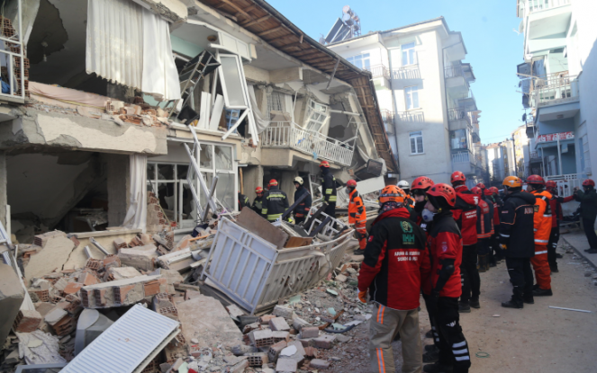

La Turchia, a partire dal 07/02 ha subito diverse scosse sismiche che oscillano tra i 4.1 e 7.8 di magnitudo, (maggiormente nella città di Kahramanmaraş ovvero l’epicentro del terremoto) negli ultimi 20 anni lo stato ha incontrato una lunga serie di terremoti più o meno catastrofici. La Turchia negli anni ha riscontrato molti terremoti per via della sua posizione geologica, il territorio si trova sopra 3 placche sismiche:
I terremoti hanno causato un bilancio spaventoso, il numero delle vittime ha raggiunto quasi i 40000 e l’OMS afferma che questo numero potrebbe raddoppiare, però il numero di vittime è soltanto ipotetico perché le zone controllate dai ribelli, sia in Turchia che in Siria, non “fanno uscire” informazioni né sul bilancio delle vittime né sulle condizioni di vita che devono sopportare le persone.
